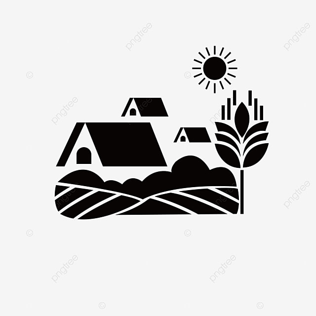

- alura
- analise
- tecnologia
- venenos
- sementes
A agricultura e essencial para a sobrevivencia dos seres vivos.
Aqui nós vemos o quanto que a alura e muito importante para a agricultura
VAMOS SITAR ALGUNS PROJETOS QUE ALURA AJUDA NA AGRICULTURA
Na tecnologia
No desenvolvimento das sementes